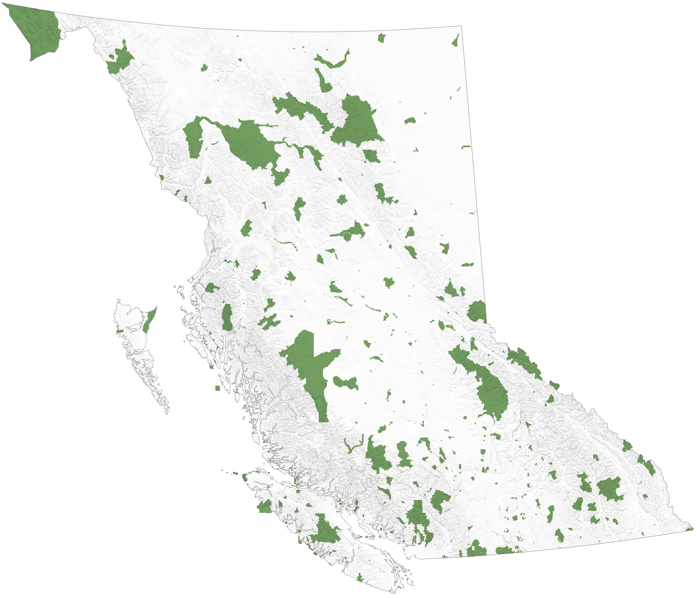

ProjectClimate Adaptive Planning for British Columbia (CAP-BC) is an online, open-access web-tool to provide climate–adapted systematic conservation planning to partnerships, government, NGO, private institutions and individuals in BC. CAP-BC provides a means of adapting our conservation plans to the projected impacts of climate change, thereby ensuring that our protected lands are as resilient as possible moving forward and providing a tool to our partners that promote the development of a network of protected areas in BC that is adaptive to future climate change |
 |
|
Current protected areas for BC Current protected lands cover 11.5% of B.C.'s land base (excluding waters and marine areas). Source: BC Data Catalogue https://catalogue.data.gov.bc.ca/ |

Climate Adaptive Planning for British Columbia